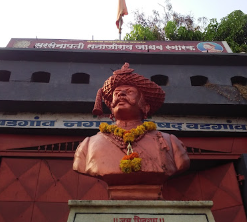
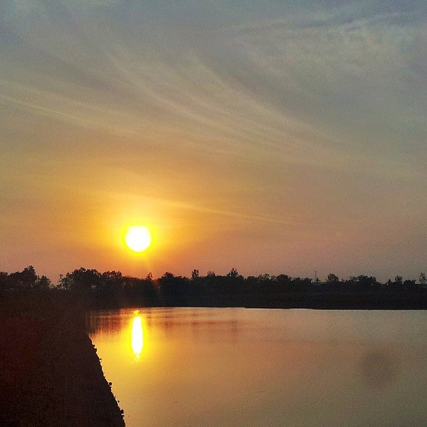

Peth vadgaon
Peth vadgaon is a small town in Kolhapur district of Maharashtra. It comes under Hatkanangle taluka.
Peth vadgaon is more famous for its historical background.Dhanaji Jadhav (1650–1708) was a warrior of the Maratha Empire. Along with Santaji Ghorpade he made terrifying campaigns against Mughal Army from 1689 to 1696. After Santaji, Dhanaji became the chief of the Maratha army in 1696 and remained on the post until his death in 1708. He died in Peth Vadgaon due to leg injury. A monument of him stands in the town. There is lake "Mahalaksmi Talav" near Mahalaxmi temple which is constructed by Shahu Maharaj. It is finely engineered to provide water for people in town. In city, there are 4 water tanks, which get filled automatically without any pumps or any other mechanism. Only by using gravity they achieved this feet.
 
In the time of British ruling, they established Vadgaon as 'Peth' where weekly bajaar held at Bazarpeth in center of Vadgaon. That is how Vadgaon got its name as 'Peth Vadgaon'. From that times upto today, weekly bajaar is on large scale. People from nearby 80 villages come here for selling variety of things. Vadgaon is also famous its Animal market where people sell buy animals.